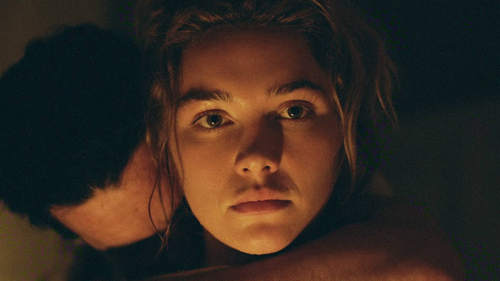
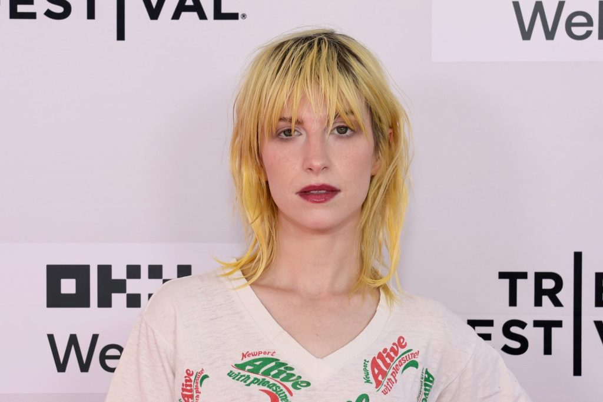

|
Tuesday · October 6, 2026
Pop Culture Digest
What’s actually dominating today
|
| Tuesday’s conversation: the Paramount–Warner Bros. merger is officially done and Hollywood now has a company called Skydance, Andrew Garfield’s Sam Altman lands at the New York Film Festival, Florence Pugh’s East of Eden takes over Netflix, and Hayley Williams fires back at the Department of Homeland Security. |
|
Industry
It’s official: Paramount closes its $110 billion Warner Bros. takeover, and Skydance is born |
Paramount Skydance completed its acquisition of Warner Bros. Discovery this morning, creating a single company called Skydance that trades on the NYSE as SKYD. David Ellison now runs Warner Bros. and Paramount Pictures, HBO Max and Paramount+, CBS, HBO, CNN, DC Studios and franchises from Harry Potter and Game of Thrones to Mission: Impossible. WBD shareholders get about $31.02 a share in cash, and WBD stock stopped trading today. A last-minute petition to halt the deal was denied by Supreme Court Justice Elena Kagan. The bill comes due quickly: the company carries roughly $80 billion in debt and has promised $6 billion in cost savings, which is expected to hit jobs across Hollywood. Under its settlement with a coalition of states, Skydance must release at least 30 films a year or sell its 49% stake in Miramax. CNN chief Mark Thompson stays under a new independent oversight board, and Bari Weiss keeps running CBS News. |
|
NBC News →
·
|
|
Movies
Artificial premieres at NYFF, and critics call Garfield’s Sam Altman the movie of the moment |
Luca Guadagnino’s OpenAI drama, the film Amazon MGM dropped after signing a $50 billion partnership with OpenAI, had its world premiere at the New York Film Festival last night. Andrew Garfield plays Altman, with Yura Borisov as Ilya Sutskever, Ike Barinholtz as Elon Musk, Cooper Hoffman as Greg Brockman and Monica Barbaro as Mira Murati, and the story builds to Altman’s firing and rehiring. Early reactions are glowing, with Next Best Picture calling it possibly “the most urgently relevant film of our time.” On the carpet, Garfield said Altman first struck him as great, honest and transparent, “and then you learn more about a person.” Altman, who hasn’t seen it, told Vanity Fair it “will not be good as an accurate depiction.” Neon opens it in theaters on Christmas Day. |
|
TV & Streaming
Florence Pugh’s East of Eden is now the No. 1 show on Netflix worldwide |
|
 |
Five days after its Oct. 1 premiere, Zoe Kazan’s seven-part Steinbeck adaptation tops Netflix’s TV charts in the U.S. and globally. Pugh plays Cathy Ames, given far more room than in the 1955 James Dean film directed by Kazan’s grandfather Elia Kazan, opposite Christopher Abbott and Mike Faist as the Trask brothers. The Guardian calls it “brilliant, compelling entertainment.” |
|
Music
Hayley Williams answers DHS with a profane Instagram reply after her “F–k ICE” concert moment |
|
 |
During “Ice in My OJ” at a show in Chula Vista, California, the Paramore singer shouted “F–k ICE” and “Free Palestine.” The Department of Homeland Security told Fox News she should “thank them for their service, not belittle their sacrifice.” On Monday, Williams posted that statement to her Instagram Story with a crude, unprintable reply aimed at “Nazi” critics, and it’s been everywhere since. |
|
Bottom of the news
|
|
|
Pop Culture Digest · curated for John · sent once daily Tuesday, October 6, 2026 · from popculture@agentmail.to |